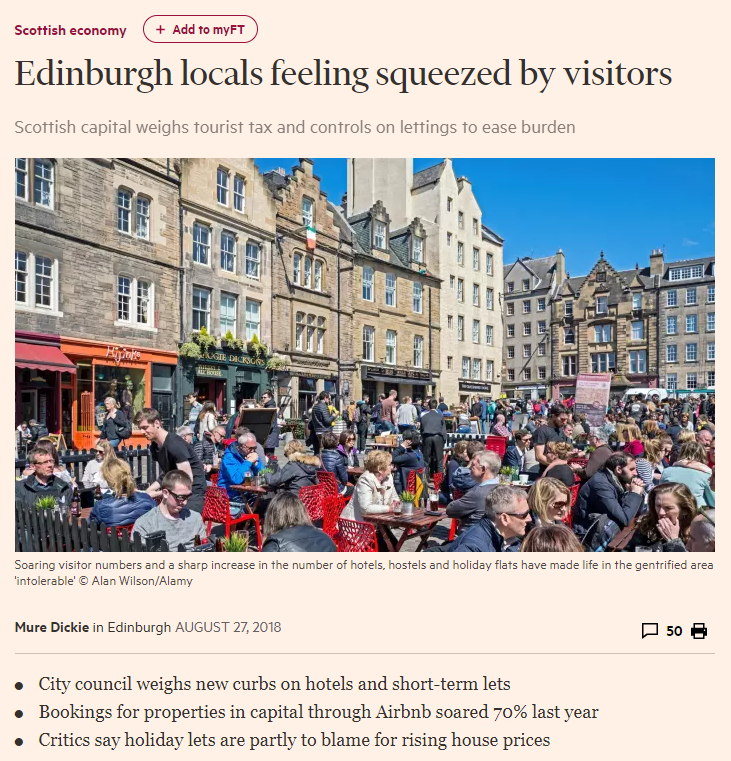

I remember my interest in this being piqued at the time the Edinburgh Fringe was beginning but a combination of deadlines and some holiday meant that it slipped my mind. But, coming back to work and clearing out the inbox, I stumbled on this piece in the FT.

The pressures on popular tourist cities from ‘over-tourism’ are well known (see a piece in CityMetric from earlier today), these often focus on the impact on local residents in terms of changing natures of their town or city centres (increases in businesses that are dominantly tourist-focused such as bars, souvenir shops, etc.), and the pressure on house prices and quality of life caused by rapidly-increasing shares of accommodation given over to temporary tourist accommodation through platforms such as Airbnb.
These are all very real, but I want to focus for now on the impact of large-scale tourism (and this includes one-off, large events, more prolonged festivals such as the Edinburgh fringe, or permanent tourism destinations) on local authorities, and its parallel that can also be applied to economic growth through retail or other destination-led expansion of local economies.
I’m interested in this angle because I see it as a small part of a much larger problem within the UK’s centralised economic and political structures, but particularly through its Westminster-driven fiscal policies. Much has been written elsewhere (and I’ll contribute more to this literature myself) on the lack of fiscal devolution in the UK, with local authorities raising only a small share of their incomes and having genuinely direct influence over the spending of an even smaller part.
Even with recent committed reforms to local government finance and the retention of business rates (see my publications section for the weeks of my life I’ve lost to this cause), local government is able to capture very little uplift of any growth in its area. However, there is at least a (theoretical) ability to capture some of the increase in large-scale commercial developments whilst not incurring much – or any – of the cost of delivering it.
But with tourism, and particularly with events-related tourism, there can be costs to bear. As Edinburgh City Council noted in the run-up to the Fringe, the city bears additional costs in terms of street cleansing and other associated activities in terms of managing the enormous increase in the number of visitors, but isn’t able to fiscally capture the benefits. There are spill-over benefits, of course: businesses see more trade, the city increases its profile (which can, of course attract more tourists, bringing more costs and benefits with it), but the critical point is that the city corporation – the local public budgets – see none of this uplift.
The call then, from an SNP-member, is for a tourist tax to both raise revenue and to perhaps soften demand for tourist-led temporary accommodation of short-term lets. These, usually in the form of bed taxes, a fixed levy on the number of person-nights stayed are common in other countries and have an advantage over other taxes by being payed mostly by people who, by definition, don’t live in the area. Because every supplier of bed-nights to visitors would come into scope (but only if the regulation of Airbnb and other types of resident or property-owner lets can be delivered alongside this) would be the inflationary impact would be felt sector-wide, providing little intra-sectoral competition issues.
In terms of its introduction, it seems that tourist taxes may be one of the more simple ways of beginning the process of tax devolution. It doesn’t impose on the traditional nationally-led taxes, and could be managed almost entirely within the collection architectures already present as part of the business rates system. There’s little to lose from a political perspective, and it would bring the UK into line with many other developed countries. And, of course, it would bring some welcome relief to the austerity that has fallen so heavily on local governments across the UK.
There’s a wider debate to be had, too (but not in this blog), about the benefits of charging visitors different rates than residents. This is also common in other countries: alcohol may be expensive in Sweden for holidaymakers, but a residents’ card reduces the price significantly, and other European cities offer discounts for local residents on public transport fares.
Interestingly, London played with this concept briefly, albeit not explicitly, when it introduced the Oyster system. Londoners were quick to migrate to the contactless system as the deposit for a card was low enough to be worth it for the lower-than-cash fares that non-Oyster holders had to bear. This meant that visitors were likely to pay higher fares for using TfL’s services than local residents. But, since the wider move to direct contactless payment through bank cards, the cheaper price is now available to non-residents with a contactless card (great news for UK and many EU citizens, bad news for Americans). An interesting project would be trying to find out the lost revenue caused by an increasing share of non-cash payments, but that’s for another day.
So, there are benefits to tourism taxes for local governments. Increased revenues to support existing costs, and potentially a benefit for locals by helping to share the pain with visitors. It may even help Westminster by supporting local government more to self-finance. The question is who will get there first.